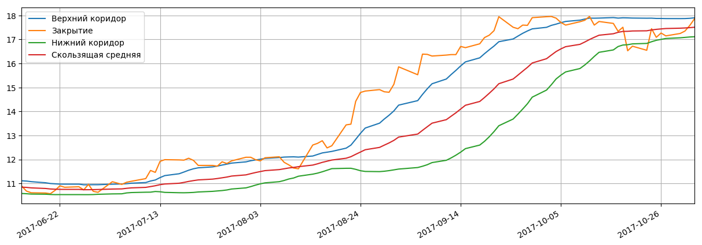
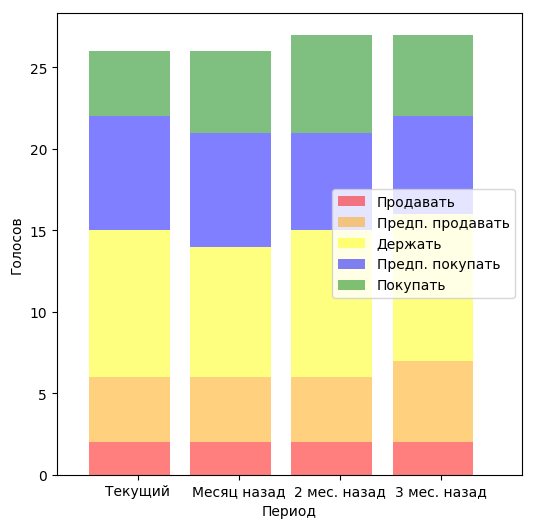
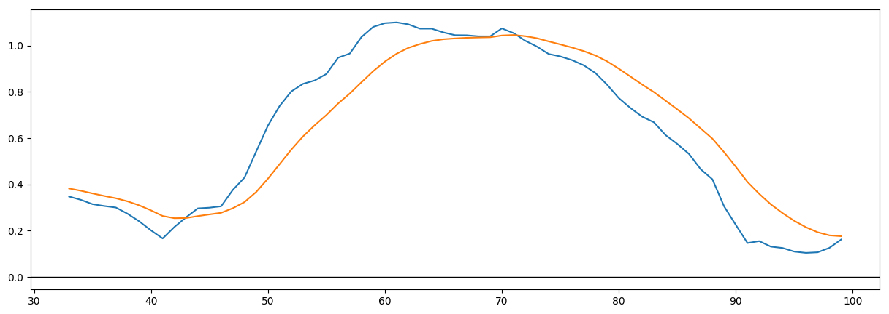

Котировки акций: Показать всеЗначение стоимости открытия, минимальной, максимальной и стоимости закрытия торгов на указаную даты, а также объемы продаж. ?
| Дата | Открытие | Минимум | Максимум | Закрытие | Объем |
|---|---|---|---|---|---|
| 2017-11-02 | 17.690001 ▲ | 17.670000 ▲ | 17.910000 ▲ | 17.860001 ▲ | 4 008 921.0 ▲ |
| 2017-11-01 | 17.639999 ▲ | 17.510000 ▲ | 17.660000 ▲ | 17.580000 ▲ | 2 322 800.0 ▼ |
| 2017-10-31 | 17.219999 ▲ | 17.219999 ▲ | 17.430000 ▲ | 17.350000 ▲ | 3 085 100.0 ▲ |
| 2017-10-30 | 17.209999 ▼ | 17.180000 ▲ | 17.290001 ▲ | 17.250000 ▲ | 2 418 100.0 ▲ |
| 2017-10-27 | 17.219999 ▼ | 17.070000 ▼ | 17.219999 ▼ | 17.150000 ▼ | 2 173 300.0 ▼ |
Японские свечи, объемы продаж, средние скользящие 20дн.,50дн.:Самый важный технический индикатор на бирже.
Подробно... ?
Основные фин.показатели:Основные финансовые показатели деятельности предприятия: Баланс, Доходы/затраты, Движение денег - годовые и квартальные.
Нажмите на заглавия чтобы развернуть все. ?
Полосы Боллинджера: Технический индикатор: Выход "Закрытия" из коридора Боллинджера есть сигналом о "нервозности" рынка ?
Последние финансовые новости: Показать всеПоследнии финансовые новости компании. Нажмите на заглавии чтобы развернуть всю новость. Внимание: машинный перевод с англ. ?
| Дата | Заголовок | Источник |
|---|---|---|
| 2017-11-02 11:03 | Оценочная оценка выигрышей в размере 3-го квартала (RACE) Ferrari (RACE), Up Y / Y | nasdaq |
| Ferrari N.V. RACE - итальянский производитель спортивных автомобилей класса люкс. Компания была дочерней компанией Fiat Chrysler Automobiles N.V более десяти лет, прежде чем она стала независимой компанией в январе 2016 года. Сильная стоимость бренда Ferrari - самый большой попутный ветер. Компания также постоянно расширяет свое присутствие в мире. В то время как его основные доходы генерируются за счет продаж роскошных автомобилей, компания также продает двигатели и товар марки Ferrari. За последние 10 лет Ferrari стала свидетелем последовательного роста выручки в основном за счет увеличения объема перевозок. Более того, постоянный спрос со стороны Северной Америки и Европы может оказать положительное влияние на продажи компании. Однако расходы, связанные с отзывом транспортного средства и негативным сдвигом в ассортименте продукции в некоторых последних кварталах, являются проблемами. В результате инвесторы с нетерпением ожидают отчета о прибылях и убытках Ferrari. Давайте быстро взглянем на выпуск третьего итальянского автомобильного гиганта. История тенденций и сюрпризов Инвесторы должны отметить, что предварительная оценка Zacks для Ferrari за третий квартал не изменилась за последний месяц. Ferrari преподнесла неожиданные сюрпризы. Он избил консенсус Закс Оценил все отстающие 4 квартала с положительным средним ударом 27,9% Ferrari N.V. Цена и EPS Сюрприз Ferrari N.V. Цена и EPS Сюрприз | Ferrari N.V. Цитата Zacks Rank В настоящее время у Ferrari есть Zacks Rank 3 (Hold), но это может измениться после отчета о доходах, который был только что выпущен. Здесь вы можете увидеть полный список сегодняшних акций Zacks # 1 Rank (Сильная Покупка). Мы выделили некоторые ключевые показатели из этого только что обнародованного объявления ниже: прибыль Феррари сбегала с скорректированной прибылью в размере 0,74 евро за акцию (87 центов за ADR), которая превзошла прогноз по Zacks Consensus 72 цента. Скорректированная прибыль была на 25% выше, чем годом ранее. Доходы Ferrari составили выручку в размере 836 миллионов евро, что на 7% выше, чем год назад. Основная статистика / Изменения к примечанию Ferrari сообщила о 3% -ном увеличении объема перевозок до 2 046 автомобилей в третьем квартале 2017 года. Компания по-прежнему ожидает, что общий объем поставок на 2017 год составит около 8 400 единиц. В течение всего 2017 года Ferrari ожидает, что чистая выручка составит около 3,4 млрд. Евро, по сравнению с предыдущей оценкой около 3,3 млрд. Евро. Кроме того, в течение всего года компания ожидает, что скорректированная EBIDTA составит около 1 миллиарда евро, что выше ожидаемых ожиданий в 950 миллионов евро. Лучшие инвестиционные идеи Zacks. Хотя мы рады поделиться многими статьями на этом сайте, наши лучшие рекомендации и самые глубокие исследования недоступны для общественности. Начиная с сегодняшнего дня, в течение следующего месяца вы можете следить за всеми частными покупками Zacks и продавать их в режиме реального времени. Наши специалисты охватывают все виды сделок ... от ценности до импульса. , , от акций до $ 10 до ETF и опционов. , , от акций, которые корпоративные инсайдеры скупают для компаний, которые собираются сообщать о позитивных сюрпризах. Вы даже можете заглянуть в эксклюзивные портфели, которые обычно закрыты для новых инвесторов. Нажмите здесь для частных сделок Zacks >> Хотите получить последние рекомендации от Zacks Investment Research? Сегодня вы можете скачать 7 лучших акций на следующие 30 дней. Нажмите, чтобы получить бесплатный отчет Ferrari N.V. (RACE): Отчет о свободном рынке акций Чтобы прочитать эту статью на Zacks.com, нажмите здесь. Инвестиционные исследования Zacks Мнения и мнения, выраженные здесь, являются мнениями и мнениями автора и не обязательно отражают мнения Nasdaq, Inc. | ||
| 2017-11-01 09:40 | Zacks.com показал основные моменты: Kraton, Cosan, Synnex, Plains GP Holdings и Fiat Chrysler Automobiles | nasdaq |
| Для незамедлительного релиза Чикаго, штат Иллинойс - 1 ноября 2017 г. - Акции в статье на этой неделе Kraton Corporation KRA, Cosan Limited CZZ, Synnex Corporation SNX, Plains GP Holdings, L.P. PAGP и Fiat Chrysler Automobiles N.V. FCAU. Экран недели от Zacks Investment Research: Выберите эти 5 Сделений по сделке с соответствующими коэффициентами EV / EBITDA Ценные инвесторы обычно склонны придерживаться стратегии ценообразования (P / E) при поиске акций, торгующихся по выгодным ценам. P / E, без тени сомнения, является самым популярным мультипликатором, используемым инвесторами для оценки справедливой рыночной стоимости акций. Но даже эта простая, широко используемая метрика оценки имеет несколько недостатков. Почему EV / EBITDA - лучшая альтернатива? В то время как P / E сокращает наиболее часто используемый коэффициент оценки акций на рынке, относительно менее используемый показатель, называемый EV / EBITDA, часто рассматривается как лучший вариант, поскольку он дает более четкое представление о потенциале оценки и прибыли компании. В отличие от P / E, которая учитывает только долю капитала компании, EV / EBITDA определяет ее общую стоимость. EV / EBITDA - это стоимость предприятия (EV) акции, деленная на ее прибыль до вычета процентов, налогов, амортизации и амортизации (EBITDA). EV - это сумма рыночной капитализации компании, ее долговых обязательств и привилегированных акций за вычетом денежных средств и их эквивалентов. По сути, это полная стоимость компании. Другой компонент множественного показателя EBITDA дает более четкое представление о прибыльности компании, поскольку она устраняет влияние неденежных расходов, таких как амортизация и амортизация, которые разбавляют чистый доход. Он также часто используется в качестве прокси для денежных потоков. Как правило, чем ниже коэффициент EV / EBITDA, тем он более привлекателен. Низкий коэффициент EV / EBITDA может означать, что запасы потенциально недооценены и наоборот. EV / EBITDA также учитывает задолженность по балансу компании, которую нет в P / E. Учитывая эту причину, EV / EBITDA обычно используется для оценки потенциальных целей приобретения, поскольку она показывает сумму задолженности, которую приобретатель должен принять. Запасы с низким коэффициентом EV / EBITDA можно рассматривать как привлекательных кандидатов на поглощение. Другим важным ограничением P / E является то, что он не может использоваться для оценки убыточной сущности. Заработки фирмы также подлежат учетным оценкам и манипуляциям с управлением. Напротив, EV / EBITDA трудно манипулировать, а также можно использовать для оценки фирм с отрицательной чистой прибылью, но они позитивны на фронте EBITDA. EV / EBITDA также является полезным критерием оценки стоимости фирм с высокой степенью использования и высокой степени износа. Он также может использоваться для сравнения компаний с разным уровнем задолженности. Но EV / EBITDA также не лишена своих недостатков и сама по себе не может окончательно определить собственный потенциал запаса и будущую производительность. Соотношение варьируется в разных отраслях и, как правило, не подходит при сравнении запасов в разных отраслях, учитывая их разнообразные потребности в капитальных расходах. Таким образом, стратегия, основанная только на EV / EBITDA, может не принести желаемых результатов. Но вы можете связать его с другими ключевыми коэффициентами, такими как цена-книга (P / B), P / E и цена-продавать (P / S), чтобы показывать реальные акции. Для остальной части этой страницы «Экран недели» посетите сайт Zacks.com по адресу: https://www.zacks.com/stock/news/280980/pick-these-5-bargain-stocks-with-enticing-evebitda-ratios Раскрытие информации: Должностные лица, директора и / или сотрудники Zacks Investment Research могут владеть или продавать короткие ценные бумаги и / или удерживать длинные и / или короткие позиции в вариантах, упомянутых в этом материале. Аффилированная инвестиционно-консультационная фирма может владеть или продавать короткие ценные бумаги и / или удерживать длинные и / или короткие позиции в вариантах, упомянутых в этом материале. О экране недели Zacks.com создал первую и самую лучшую систему скрининга в сети, получившую различие как «сайт 1 для скрининга акций» журнала Money Magazine. Но мощные инструменты скрининга - это только начало. Именно поэтому Закс создал Screen of the Week, чтобы выделить выгодные стратегии сбора акций, которые могут активно использовать инвесторы. Сильные запасы, которые должны быть в новостях Многие из них мало известны и летают под радаром Уолл-стрит. Они практически неизвестны широкой публике. Тем не менее сегодняшние 220 Zacks Rank # 1 «Сильные покупатели» были созданы системой сбора акций, которая с 1988 по 2016 год более чем удвоила рынок. Средний прирост составил 25% в год. Смотрите эти потенциально потенциальные акции бесплатно >>. Следуйте за нами на Twitter: http://twitter.com/zacksresearch Присоединяйтесь к нам на Facebook: http://www.facebook.com/ZacksInvestmentResearch Zacks Investment Research находится под общим контролем с аффилированными лицами (включая брокер-дилера и инвестиционного консультанта), которые могут участвовать в сделках, связанных с вышеуказанными ценными бумагами, для клиентов таких филиалов. Контактное лицо: Джим Гьяквито Компания: Zacks.com Телефон: 312-265-9268 Эл. адрес: пр@заскс.ком Посетите: www.Zacks.com Zacks.com предоставляет инвестиционные ресурсы и информирует вас об этих ресурсах, которые вы можете использовать при принятии своих инвестиционных решений. Zacks предоставляет вам информацию об этом ресурсе в соответствии с отказом от ответственности «Условия использования» Zacks. www.zacks.com/disclaimer. Прошлые показатели не являются гарантией будущих результатов. Потенциал потерь может быть связан с любыми инвестициями. Этот материал предоставляется только в информационных целях, и ничто в настоящем документе не представляет собой инвестиционную, юридическую, бухгалтерскую или налоговую консультацию или рекомендацию о покупке, продаже или хранении ценных бумаг. Никаких рекомендаций или рекомендаций не сообщается о том, подходят ли какие-либо инвестиции для конкретного инвестора. Не следует полагать, что любые инвестиции в ценные бумаги, компании, сектора или рынки, идентифицированные и описанные, были или будут прибыльными. Вся информация актуальна на дату и может быть изменена без предварительного уведомления. Любые мнения или мнения, выраженные, могут не соответствовать интересам фирмы в целом. Zacks Investment Research не занимается инвестиционно-банковским, рыночным или активным управлением любыми ценными бумагами. Эти доходы относятся к гипотетическим портфелям, состоящим из акций с Zacks Rank = 1, которые ежемесячно были перебалансированы с нулевыми транзакционными издержками. Это не доходность фактических портфелей акций. S & P 500 является неуправляемым индексом. Посетите http://www.zacks.com/performance для получения информации о номерах производительности, отображаемых в этом пресс-релизе. Хотите получить последние рекомендации от Zacks Investment Research? Сегодня вы можете скачать 7 лучших акций на следующие 30 дней. Нажмите, чтобы получить бесплатный отчет Fiat Chrysler Automobiles N.V. (FCAU): Отчет о свободном складе Kraton Corporation (KRA): Отчет о свободном рынке акций Synnex Corporation (SNX): Отчет о свободном запасе Plains Group Holdings, L.P. (PAGP): Отчет по свободному фондовому анализу Cosan Limited (CZZ): Отчет о свободном рынке акций Чтобы прочитать эту статью на Zacks.com, нажмите здесь. Мнения и мнения, выраженные здесь, являются мнениями и мнениями автора и не обязательно отражают мнения Nasdaq, Inc. | ||
| 2017-10-30 01:48 | Fiat Chrysler Automobiles NV (F) PT Установлен в размере 11,00 от Citigroup Inc. | dispatchtribunal |
| Финалу Chrysler Automobiles NV (BIT: F) была присвоена целевая цена в размере 11,00 евро (12,94 доллара США) аналитиками Citigroup Inc. в отчете, опубликованном в среду, 18 октября. В настоящее время фирма имеет рейтинг «продавать» на акции. Несколько других аналитиков также недавно комментировали F. J P Morgan Chase & Co установили ценовую цель в размере 10,00 евро ($ 11,76) по акциям Fiat Chrysler Automobiles NV и дали акции «нейтральный» рейтинг в исследовательской заметке в понедельник, 10 июля. UBS AG установила целевую цену в размере 11,00 евро ($ 12,94) на акции Fiat Chrysler Automobiles NV и дала компании «нейтральный» рейтинг в исследовательской записке в понедельник, 10 июля. Goldman Sachs Group, Inc. (The) установила целевую цену в размере 20,10 евро ($ 23,65) на акции Fiat Chrysler Automobiles NV и дала компании рейтинг «покупать» в исследовательской записке в среду, 12 июля. Kepler Capital Markets установила целевую цену в размере 12,50 евро (14,71 долл. США) на акции Fiat Chrysler Automobiles NV и дала компании рейтинг «покупать» в исследовательской записке в пятницу, 28 июля. Наконец, Macquarie установила ценовую цель в размере 8,50 евро ($ 10,00) на акции Fiat Chrysler Automobiles NV и дала компании рейтинг «продать» в исследовательской записке в пятницу, 28 июля. Три инвестиционных аналитика оценили акции с рейтингом продажи, три из них присвоили рейтинг холдинга, а пять получили рейтинг покупки акций компании. В настоящее время компания имеет консенсус-рейтинг «Держать» и достижение консенсусной цены в размере 14,75 евро (17,35 долл. США). ПРЕДУПРЕЖДЕНИЕ АВТОРСКОГО ПРАВА ПРЕДУПРЕЖДЕНИЕ: «Fiat Chrysler Automobiles NV (F) PT, установленный Citigroup Inc. в размере 11,00 евро», изначально сообщалось Трибуналом по рассылке и является единственным имуществом Трибунала по рассылке. Если вы читаете эту статью на другом сайте, она была скопирована незаконно и переиздана с нарушением международного права на товарный знак и авторское право. Оригинальную версию этой статьи можно получить по адресу https://www.dispatchtribunal.com/2017/10/30/citigroup-inc-analysts-give-fiat-chrysler-automobiles-nv-fa-11-00-price- target.html. Количество просмотров: тип = а & ID = 908856 Получайте новости и рейтинги Fiat Chrysler Automobiles NV Daily - введите свой адрес электронной почты ниже, чтобы получить краткий обзор последних новостей и рейтингов аналитиков для Fiat Chrysler Automobiles NV и связанных с ними компаний с бесплатным ежедневным электронным бюллетенем MarketBeat.com. | ||
| 2017-10-29 10:10 | Gotham Asset Management LLC занимает должность в Fiat Chrysler Automobiles N.V. (NYSE: FCAU) | dispatchtribunal |
| Компания Gotham Asset Management LLC купила новую долю в Fiat Chrysler Automobiles N.V. (NYSE: FCAU) в течение второго квартала, согласно данным компании в своей последней подаче в Комиссию по ценным бумагам и биржам. Фирма приобрела 50 003 акции компании, стоимость которых составляет около 532 000 долларов США. Несколько других крупных инвесторов также купили и продали акции FCAU. ООО «Ренессанс Технологии» сняло свою долю в акциях Fiat Chrysler Automobiles N.V. на 118,4% во втором квартале. В настоящее время ООО «Ренессанс Технологии» владеет 8 320 100 акций компании на сумму 88 443 000 долл. США после покупки дополнительных 4 510 540 акций в последнем квартале. Vanguard Group Inc. подняла свою долю в акциях Fiat Chrysler Automobiles N.V. на 9,2% во втором квартале. Vanguard Group Inc. теперь владеет 27 193 557 акциями акций компании на сумму 289 068 000 долларов США после покупки дополнительных 2 290 117 акций в последнем квартале. FMR LLC во втором квартале подняла свою долю в акциях Fiat Chrysler Automobiles N.V. на 5,8%. Теперь компания FMR владеет 28 957 759 акциями акций компании на сумму 306 684 000 долларов США после покупки дополнительных 1 580 544 акций в последнем квартале. Банк Нью-Йорка Mellon Corp снял свою долю в акциях Fiat Chrysler Automobiles N.V. на 46,7% во втором квартале. Банк Нью-Йорка Mellon Corp теперь владеет 4 173 029 акциями акций компании на сумму 44 359 000 долларов США после покупки дополнительных 1 329 107 акций в последнем квартале. Наконец, FNY Partners Fund LP поднял свою долю в акциях Fiat Chrysler Automobiles N.V на 1 954,0% во втором квартале. Фонду FNY Partners LP теперь принадлежит 1 328 924 акций компании на сумму 14 126 000 долларов США после покупки дополнительных 1 264 224 акций в последнем квартале. 28.80% акций в настоящее время принадлежит хедж-фондам и другим институциональным инвесторам. Ряд аналитиков по акциям прокомментировали акции FCAU. Zacks Investment Research понизило доли Fiat Chrysler Automobiles N.V от рейтинга «купить» до «удерживаемого» рейтинга в заметке исследования в четверг. Корпорация Bank of America установила целевую цену в размере 19,00 долл. США по акциям Fiat Chrysler Automobiles N.V и дала акции рейтинг «держать» в исследовательской записке в среду. Jefferies Group LLC подтвердила рейтинг «buy» и установила целевую цену в размере $ 19,00 на акции Fiat Chrysler Automobiles N.V в исследовательской записке в понедельник, 16 октября. BidaskClub понизил доли Fiat Chrysler Automobiles N.V от рейтинга «сильной покупки» до рейтинга «купить» в исследовательской записке в субботу, 7 октября. Наконец, Deutsche Bank AG подтвердил рейтинг «hold» по акциям Fiat Chrysler Automobiles N.V в исследовательской записке в четверг, 7 сентября. Один аналитик по ценным бумагам оценил акции с рейтингом продажи, пять из них выпустили рейтинг холдинга, восемь из них присвоили рейтинг покупки, а один дал сильный рейтинг покупки акции. В настоящее время компания имеет средний рейтинг «Покупать» и достижение консенсусной цены в размере 15,84 долл. США. Fiat Chrysler Automobiles N.V. (NYSE FCAU) торгуется на 0,69% во время полуденной торговли в пятницу, достигнув 17,15 доллара. Было обменено 2,173,334 акций. Акции имеют рыночную капитализацию в размере 26,36 млрд. Долл. США, соотношение цены и прибыли 7,76 и бета-версии 1,73. Fiat Chrysler Automobiles N.V. имеет 12-месячный минимум в 6,71 доллара США и 12-месячный максимум в 18,10 доллара. Фирма имеет 50-дневную скользящую среднюю в 17,29 долл. США и 200-дневную скользящую среднюю в размере 13,09 долл. США. Fiat Chrysler Automobiles N.V. (NYSE: FCAU) в последний раз объявила о своих квартальных доходах в четверг, 27 июля. Компания сообщила о прибыли в размере 0,76 долл. За акцию за квартал, опередив консенсус-аналитиков аналитиков на 0,59 долл. США на 0,17 долл. США. Фирма имела доход в размере 27,93 млрд. Долл. США за квартал, по сравнению с ожиданиями аналитиков в размере 29,24 млрд. Долл. США. У Fiat Chrysler Automobiles N.V. была рентабельность собственного капитала 16,53%, а чистая маржа составила 2,81%. Доход компании вырос на 0,1% по сравнению с тем же кварталом прошлого года. За тот же период в предыдущем году бизнес разместил прибыль в размере 0,45 долл. США за акцию. В среднем, аналитики по акциям ожидают, что Fiat Chrysler Automobiles N.V будет размещать прибыль в размере 2,66 долл. За акцию за текущий год. НАРУШЕНИЕ ТРЕЙДЕМАРМА ПРЕДУПРЕЖДЕНИЕ: Настоящий отчет был опубликован Трибуналом по рассылке и является собственностью Трибунала по рассылке. Если вы обращаетесь к этому отчету в другой публикации, он был украден и переиздан в нарушение международных законов об авторских правах и товарных знаках. Оригинальную версию этого отчета можно просмотреть на странице https://www.dispatchtribunal.com/2017/10/29/50003-shares-in-fiat-chrysler-automobiles-nv-fcau-purchased-by-gotham-asset- управление-llc.html. Профайл Компании Fiat Chrysler Automobiles N.V. Fiat Chrysler Automobiles N.V., вместе со своими дочерними компаниями, проектирует, инженеров, производит, распространяет и продает транспортные средства, компоненты и производственные системы. Компания работает в шести сегментах: NAFTA, LATAM, APAC, EMEA, Maserati и компоненты. Он предоставляет легковые автомобили, легкие грузовики и легкие коммерческие автомобили под брендами Abarth, Alfa Romeo, Chrysler, Dodge, Fiat, Fiat Professional, Jeep, Lancia и Ram; и роскошные автомобили под маркой Maserati, а также соответствующие сервисные части и аксессуары, а также контракты на обслуживание под маркой Mopar. Количество просмотров: тип = F & ID = 2715643 Получайте новости и рейтинги Fiat Chrysler Automobiles N.V. Daily. Введите свой адрес электронной почты ниже, чтобы получить краткий обзор последних новостей и рейтингов аналитиков для Fiat Chrysler Automobiles N.V. и связанных с ними компаний с бесплатным ежедневным электронным бюллетенем MarketBeat.com. | ||
| 2017-10-28 07:36 | Рейтинг Fiat Chrysler Automobiles N.V. (FCAU) понизился до уровня Zack Investment Research | dispatchtribunal |
| Fiat Chrysler Automobiles N.V. (NYSE: FCAU) был понижен Zacks Investment Research с рейтингом «купить» до «удерживаемого» рейтинга в примечании, выпущенном инвесторам в четверг. По словам Закса, «Fiat Chrysler Automobiles NV работает как международная автомобильная компания. Он занимается проектированием, проектированием, производством, распространением и продажей транспортных средств и компонентов и производственных систем. Компания работает под брендами Abarth, Alfa Romeo, Chrysler, Dodge, Fiat, Fiat Professional, Jeep, Lancia и Ram. Он также производит металлургическую продукцию и производственные системы для автомобильной промышленности, а также владеет издательскими и страховыми компаниями. Fiat Chrysler Automobiles NV базируется в Великобритании. « Другие аналитики также недавно опубликовали отчеты о запасах. Корпорация Bank of America установила целевую цену в размере $ 19,00 на акции Fiat Chrysler Automobiles N.V. и предоставила компании рейтинг «держать» в отчете об исследовании в среду. Kepler Capital Markets повысила доли Fiat Chrysler Automobiles N.V от рейтинга «hold» до «buy» в отчете исследования в пятницу, 28 июля. Morgan Stanley пересчитал рейтинг «лишнего веса» и установил целевую цену в размере 14,00 долл. США по акциям Fiat Chrysler Automobiles N.V в исследовании, опубликованном в понедельник, 17 июля. Barclays PLC повысила доли Fiat Chrysler Automobiles N.V от номинала «равный вес» до «избыточного веса» и снизила их целевую цену для компании с 15,53 до 10,00 долларов США в исследовательском отчете в среду, 6 сентября. Наконец, Jefferies Group LLC повысила целевую цену акций Fiat Chrysler Automobiles N.V. с 14,00 долл. США до 19,00 долл. США и предоставила компании рейтинг «покупать» в отчете об исследовании в среду, 23 августа. Один инвестиционный аналитик оценил акции с рейтингом продажи, пять выпустили рейтинг холдинга, восемь дали рейтинг покупки и один присвоил компании сильный рейтинг покупки. У компании средний рейтинг «Покупать» и цель консенсусной цены - 15,84 доллара. Акции Fiat Chrysler Automobiles N.V. (NYSE FCAU) открылись в 17.15 в четверг. Запасы имеют рыночную капитализацию в размере 26,36 млрд. Долл. США, соотношение цены и прибыли 7,76 и бета-версии 1,73. У акции есть 50-дневная скользящая средняя цена в 17,25 доллара США и 200-дневная скользящая средняя цена 13,01 доллара. Fiat Chrysler Automobiles N.V. имеет 1-летний минимум в 6,71 доллара США и 1-летний максимум в 18,10 доллара. Fiat Chrysler Automobiles N.V. (NYSE: FCAU) в последний раз опубликовала результаты своих доходов в четверг, 27 июля. Компания сообщила о прибыли в размере 0,76 долл. За акцию (EPS) за квартал, опередив консенсус-аналитиков аналитиков в размере 0,59 долл. США на 0,17 долл. США. В течение квартала компания получила доход в размере 27,93 млрд. Долл. США по сравнению с консенсус-прогнозом в размере 29,24 млрд. Долл. США. Fiat Chrysler Automobiles N.V. имела чистую маржу в размере 2,81% и рентабельность собственного капитала в размере 16,53%. Ежеквартальный доход фирмы вырос на 0,1% по сравнению с аналогичным периодом прошлого года. За тот же период в предыдущем году фирма разместила прибыль в размере 0,45 долл. США за акцию. Аналитики рынка акций ожидают, что Fiat Chrysler Automobiles N.V. опубликует $ 2,66 EPS за текущий год. НАРУШЕНИЕ ТРЕЙДЕМАРМА ПРЕДУПРЕЖДЕНИЕ: эта часть была отправлена Трибуналом по рассылке и является единственным имуществом Трибунала по рассылке. Если вы просматриваете эту статью на другом сайте, ее незаконно копируют и перепечатывают в нарушение законов США и международных законов об авторском праве и товарных знаках. Правильную версию этой части можно прочитать на странице https://www.dispatchtribunal.com/2017/10/28/fiat-chrysler-automobiles-nv-fcau-rating-lowered-to-hold-at-zacks-investment- research.html. Ряд институциональных инвесторов и хедж-фондов недавно добавили или уменьшили свои доли в бизнесе. Parametrica Management Ltd приобрела новую позицию в Fiat Chrysler Automobiles N.V в третьем квартале, оценив ее в 473 000 долларов. Aperio Group LLC увеличила свои запасы в Fiat Chrysler Automobiles N.V. на 3,1% в третьем квартале. В настоящее время Aperio Group LLC владеет 1,290,232 акциями акций компании на сумму 23 108 000 долларов США после покупки дополнительных 39 292 акций в последнем квартале. First Trust Advisors LP увеличила свои запасы в Fiat Chrysler Automobiles N.V. на 0,9% в третьем квартале. First Trust Advisors LP теперь владеет 1 509 288 акциями акций компании на сумму 27 031 000 долларов США после покупки дополнительных 13 325 акций в последнем квартале. Компания Ingalls & Snyder LLC приобрела новую позицию в Fiat Chrysler Automobiles N.V в третьем квартале на сумму 181 000 долларов США. Наконец, Cetera Investment Advisers увеличила свои запасы в Fiat Chrysler Automobiles N.V на 15,0% во втором квартале. Cetera Investment Advisers теперь владеет 14 074 акциями акций компании на сумму 148 000 долларов США после покупки дополнительных 1840 акций в последнем квартале. 28.80% акций принадлежит институциональным инвесторам. О Fiat Chrysler Automobiles N.V. Fiat Chrysler Automobiles N.V., вместе со своими дочерними компаниями, проектирует, инженеров, производит, распространяет и продает транспортные средства, компоненты и производственные системы. Компания работает в шести сегментах: NAFTA, LATAM, APAC, EMEA, Maserati и компоненты. Он предоставляет легковые автомобили, легкие грузовики и легкие коммерческие автомобили под брендами Abarth, Alfa Romeo, Chrysler, Dodge, Fiat, Fiat Professional, Jeep, Lancia и Ram; и роскошные автомобили под маркой Maserati, а также соответствующие сервисные части и аксессуары, а также контракты на обслуживание под маркой Mopar. Количество просмотров: ArticleHistoryID = 12299318 & постдатировать = 2017-10-28 & типа = а & третичный = 1 & ID = 914679 Получайте новости и рейтинги Fiat Chrysler Automobiles N.V. Daily. Введите свой адрес электронной почты ниже, чтобы получить краткий обзор последних новостей и рейтингов аналитиков для Fiat Chrysler Automobiles N.V. и связанных с ними компаний с бесплатным ежедневным электронным бюллетенем MarketBeat.com. | ||
Рекомендации аналитиков: Распределение голосов ведущих аналитиков в вопросе "что делать сейчас с акциями" ?
Стратегии: Демонстрация сколько "заработаем" купив акций на $100000 придерживаясь таких правил:
1: Храним
2: Продаем/покупаем по сигналу "скользящие:20-50"
3: Продаем/покупаем по сигналу "3 роста-продаем, 3 снижения-покупаем." ?
Индекс RSI:Индекс относительной силы - индикатор технического анализа, определяющий силу тренда и вероятность его смены.
За верхнюю линию говорит о "перекупленности акций", за нижнюю - о "перепроданности" ?
Индекс MACD:Сигналом «Продавать» считают, когда скользящая с меньшим периодом в верхней зоне пересекает сверху вниз скользящую с бОльшим периодом. И наоборот. ?
